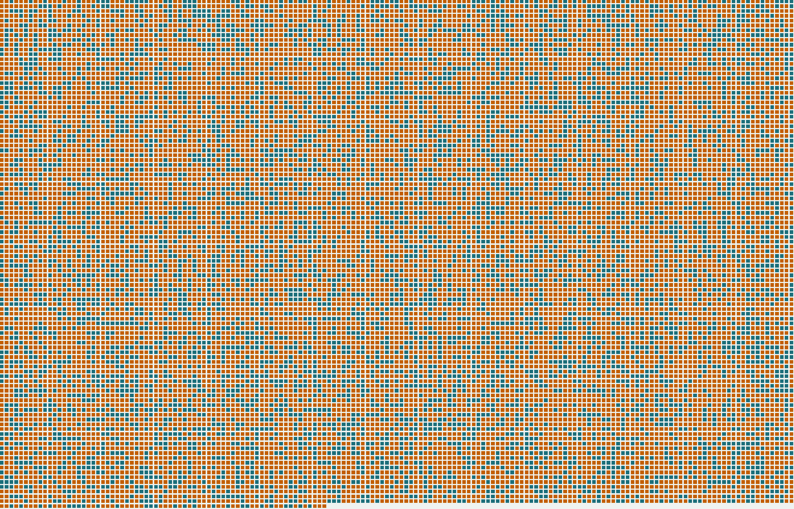
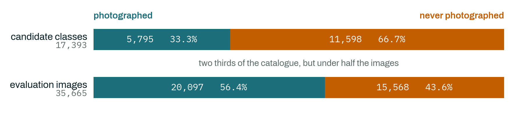
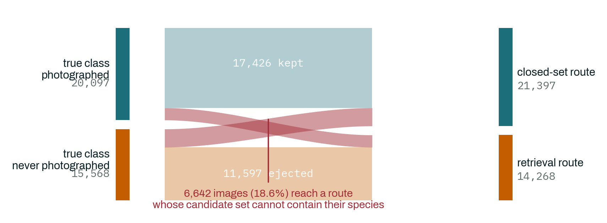
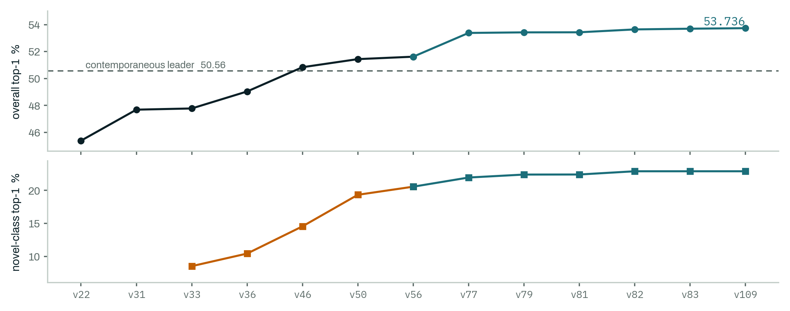
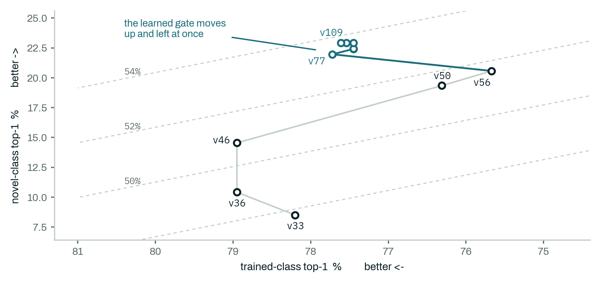
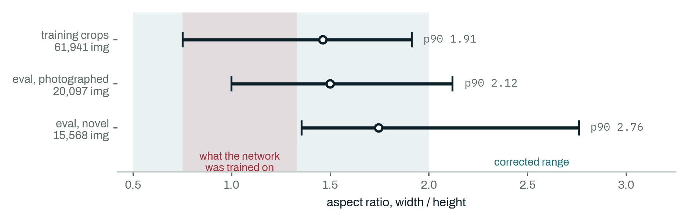
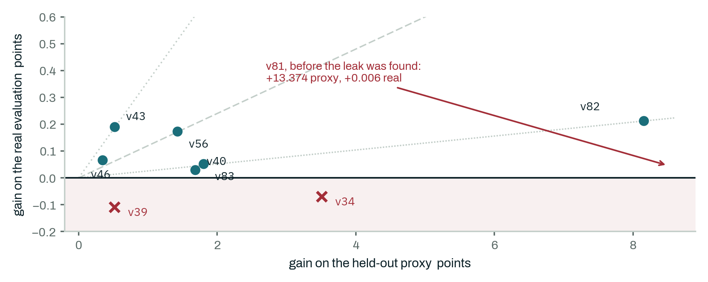
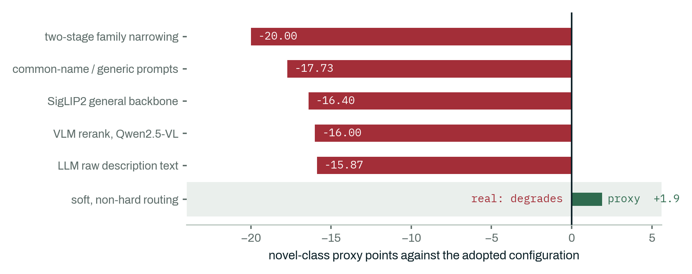

A generalized zero-shot recognition system for 17,393 fish species, two thirds of which have no training photograph anywhere in the data — and a record of what thirty leaderboard evaluations taught us about trusting a held-out proxy.

Every evaluation image must be given one species name drawn from a fixed list of 17,393. For 11,598 of those species the organizers supply no photograph at all — only the scientific name and its position in the taxonomy. The scoring is a straight population-weighted accuracy, so the two thirds of the catalogue that were never photographed still account for 43.65% of the score.
The system answers by splitting the decision rather than the data. A learned gate reads twelve signals off each image and sends it down one of two routes: a closed-set classifier over the 5,795 photographed species, or a retrieval route that scores the remaining 11,598 against text and against an external bank of 101,545 biodiversity photographs. The routes share no scoring leg and their candidate sets are disjoint, so no image is ever subjected to a single 17,393-way argmax.
Three engineering corrections produced almost all of the gain: fixing an aspect-ratio mismatch between how the network was trained and how the evaluation images are framed; adding the external photograph bank for species with no images of their own; and replacing a hand-derived routing threshold with a learned classifier. None of them is exotic. Each was found by measurement after an assumption failed.
The more transferable result is about the validation setup, not the model. Under a hard budget of three submissions per day and thirty in total, nearly every decision was screened on an internal held-out proxy first. That proxy is measurable, so we measured it: across nine confirmed changes the share of proxy gain that survived contact with the real evaluation ranged from parity down to a factor of 2,229.
A re-ranker gained +13.374 points on the proxy and delivered +0.006 on the real evaluation. It had not learned to rank evidence. It had learned to recognise which population the proxy draws its correct answers from — a shortcut that class-disjoint cross-validation cannot see, because every fold's answer still sits inside the same subpopulation. Rebuilding the candidate pool to close the shortcut cut the proxy gain to +8.154 and raised the real gain to +0.213: a 35× better-transferring signal from a smaller-looking number.
That produced a rule we now apply before spending a submission. Changes that add information the system did not have compound with the rest of the pipeline and transfer. Changes that only re-weight information it already has return most of their proxy gain on the real evaluation, or reverse it. Both halves were confirmed twice, independently, on separate components. Section 4 gives the measurements.
The label space holds 17,393 species. 5,795 of them appear in the training set, which contains 64,259 labelled images. The other 11,598 appear nowhere in the training data and are known only by name and taxonomic placement. All 17,393 names are published in advance, which makes this generalized zero-shot recognition rather than open-set recognition: nothing is unknown, but most of it is unseen.

The evaluation set holds 35,665 images: 20,097 of photographed species, 15,568 of species with no training image. Those proportions are the scoring weights exactly — accuracy is 0.5635 × (accuracy on photographed species) + 0.4365 × (accuracy on the rest). One point on the photographed side is worth 0.56 overall points; one point on the other side is worth 0.44. The asymmetry matters, because the two sides are far apart in difficulty and every routing decision trades one against the other.
Two constraints shape everything that follows. The rules forbid using evaluation split metadata to decide whether an image's true species is photographed or not, or to narrow its candidate set; one uniform procedure must run over all 35,665 images and emit a label from the full space. And the leaderboard allows three evaluations per day, thirty in total.
A thirty-evaluation budget changes the research process rather than just slowing it. Almost every candidate change is screened on an internal held-out proxy, and only changes that clear a fixed margin are spent on a real evaluation. That makes the proxy's reliability a property worth measuring in its own right, which is what Section 4 does.
The gate began as a hand-derived rule over two standardized signals, thresholded so that the top 60% of images by confidence take the closed-set route. That fraction is not tuned: it follows from an identity. Writing a and b for the two routes' conditional accuracies, a marginal image is worth ejecting only once its purity clears a/(a+b). When retrieval raised b from 19.5% to 26.0%, that threshold fell and the optimum moved from 0.72 to 0.60 on its own — a consequence of the retrieval work, not a separate discovery.
Replacing that rule with a 12-feature logistic classifier at the same operating point raised the real-evaluation gate AUC from 0.9084 to 0.9314 and lifted both routes at once: photographed-species accuracy from 75.67% to 77.72%, and the rest from 20.57% to 21.96%, in a single submission. It is the only change in the project that improved both sides simultaneously rather than trading one for the other.

That 18.6% is the structural price of the architecture, and it bounds what any amount of classifier work can recover. It is also why gate quality was worth a submission: every point of gate accuracy moves images out of that band, which is why the learned gate improved both routes at once rather than trading between them.
The system is transductive at five points: the rank-quantile threshold, an across-image normalization term, the Sinkhorn column prior, and two batch-level score standardizations. Freezing the largest of these against a reference pool instead of the test batch changes 296 of 35,665 predictions, which bounds the coupling at 0.63 overall points. The learned gate and both re-rankers add no coupling of their own — each scores one image, or one candidate, at a time.

Almost every lever in this project moved accuracy from one side of the split to the other at roughly four to one, set by the metric weights. Retrieval buys accuracy on unphotographed species; routing more images to the closed-set branch buys accuracy on photographed ones. Plotting both axes together makes the exception visible.

The single largest early correction was not a model change. Standard training augmentation sampled aspect ratios in [0.75, 1.33]; the evaluation images of unphotographed species have a median aspect of 1.74 and a 90th percentile of 2.76. Fish are elongated, and the network had never been shown that framing.

| id | change | photo'd | novel | overall |
|---|---|---|---|---|
| v22 | closed-set, shift-robust ensemble | — | — | 45.39 |
| v31 | routing fraction f = 0.72, per image | — | — | 47.69 |
| v33 | Sinkhorn on the retrieval route | 78.20 | 8.51 | 47.78 |
| v36 | corrected augmentation, TaxaBind | 78.95 | 10.42 | 49.04 |
| v46 | external bank, merged on both legs | 78.95 | 14.55 | 50.84 |
| v50 | routing fraction f = 0.60 | 76.31 | 19.34 | 51.44 |
| v56 | crop views, 336px bank | 75.67 | 20.57 | 51.62 |
| v77 | learned 12-feature gate | 77.72 | 21.96 | 53.383 |
| v81 | re-ranker, on a leaked proxy | 77.45 | 22.42 | 53.431 |
| v82 | re-ranker, leak closed | 77.45 | 22.91 | 53.644 |
| v83 | + closed-set re-ranker | 77.54 | 22.91 | 53.697 |
| v109 | + genus-level backoff | 77.61 | 22.91 | 53.736 |
Species with no photograph were the binding constraint throughout, and text alone plateaued at 10.42%. Eight separate attempts to improve the text representation all failed (Section 5). What worked was giving those species pictures from somewhere else: 117,225 photographs from the iNaturalist Open Data archive over 7,364 of the unphotographed species, capped at 24 per species, 101,545 embedded into the final bank. A species is scored by the mean of its top-4 cosine similarities — measured, not assumed: a plain class mean scores 43.49, a single nearest photograph 44.61, top-4 pooling 45.25.
Because the bank and the evaluation set are both drawn from public biodiversity imagery, near-duplication is a real risk and we audited it directly, comparing all 35,665 evaluation embeddings against all 101,106 bank embeddings. Calibrated against genuinely different photographs of the same species, the unphotographed split has 0.906% of images above the duplicate threshold, about three times chance. Treating every one of those as free would inflate accuracy by at most 0.91 of the +10.15 points attributed to retrieval — 8.9% of the claimed gain. The retrieval result survives that bound; an unqualified no-duplication claim would not.
Internal measurements use a pseudo-novel split: the 1,159 rarest training species are withheld entirely, and 2,318 of their images are scored against the full candidate list under class-disjoint cross-validation. It is a careful proxy, and it still fails in three distinct ways, two of them well known.
Magnitude is not preserved. Transfer ratios across confirmed changes span 0.018 to 0.359, a twentyfold range. Sign is not preserved. Two changes gained proxy points and lost real ones. And ordering is not preserved either: a simpler unified architecture that discards the routing split was preferred by the proxy at 57.02 against the routed system's 50.71, and lost by at least 1.36 points in reality.
The population is not preserved. On the proxy, the correct answer is always one of the 1,159 withheld species — 9.1% of the candidate pool — and that subpopulation is identifiable from its own features, because withheld species have training images and therefore distinctive prototype and bank statistics. A re-ranker trained on that pool learned to prefer answers from the eligible 9.1%, picking them 53.7% of the time against the baseline's 38.4%. It was not ranking evidence. It was detecting the shape of the holdout.
Class-disjoint cross-validation does not catch this. Splitting which withheld species land in each fold still leaves every fold's correct answer inside the same 9.1% subpopulation. The defence that protects against memorising a class does nothing against identifying a population.
| re-ranker | candidate pool | proxy | real |
|---|---|---|---|
| as first built | correct answer always inside 9.1% subpopulation | +13.374 | +0.006 |
| leak closed | restricted to eligible species only | +8.154 | +0.213 |
The size of a holdout gain is not evidence. The population it was measured on is. Per-image decisions — the routing gate — have no candidate subpopulation to exploit and are not exposed to this. Per-candidate scoring is, and any new one should have its pool checked for identifiability before it is trusted, because the standard split does not perform that check.
Two independent components let us test whether the kind of a change, rather than the size of its proxy gain, predicts what the real evaluation will say.

| change | kind | real gain |
|---|---|---|
| routing gate, +10 new features | new information | +1.767 |
| same 12 features, re-weighted harder | re-weighting | +0.042 |
| genus-level sibling similarity | new information | +0.039 |
| closed-set fusion weights, re-tuned | re-weighting | −0.17 |
The practical consequence is a budgeting rule. A proxy gain from a change that supplies evidence the system did not previously have is worth a submission. A proxy gain from a change that only redistributes weight over evidence it already had is not, however large the proxy number looks.
The aggregate is the point: most of the ideas that sounded most promising were the ones that failed hardest, and the surviving system is unglamorous by comparison.

Also ruled out, with no single comparable number: BioTrove-CLIP as a backbone (0.00 and 0.04, near-total failure); CORAL domain adaptation (harness verified, no lift); unsupervised embedding whitening (at or below the raw baseline); a gradient-boosted re-ranker in place of the logistic one (−0.008, no meaningful change); and a sweep of 31 candidate mechanisms for the closed-set route that produced exactly one survivor, the genus backoff that shipped.
Seven adapters for the external-prototype encoder were scored standalone. Ranked by raw score, the best reaches 15.53 while the adopted one reaches only 14.50 — yet fused into the system the first contributes +0.00 and the second +0.43. That looks like a clean anti-correlation between component quality and system value. It is not.
The two were trained against different text targets and so started from different baselines, 15.36 and 13.76. Measured as improvement over its own starting point the ordering reverses, +0.17 against +0.74, which agrees with the fused result. The lesson is narrower and more useful than "component scores mislead": a raw score compared across differently initialised runs misleads, and the delta recovers the right answer where the level does not.
| risk | level | what it means for the numbers here |
|---|---|---|
| Adaptation to the evaluation set | High | Thirty sequential leaderboard evaluations with no Ladder-style protection. The routing fraction and the Sinkhorn temperature were set from real feedback, and the augmentation correction was derived by measuring the evaluation images themselves. This touches every real number in the report. |
| Domain gap in the bank | Medium | The audit bounds near-duplication at 8.9% of the retrieval gain. It does not show that bank photographs and evaluation images share a distribution — they demonstrably do not, and that gap is why proxy measurements on this branch mislead. |
| Sequential tuning | Medium | Routing fraction, fusion weights and bank weight were tuned one at a time against a proxy that Section 4 shows is unreliable on exactly those axes. The final configuration is not claimed to be jointly optimal. |
| No significance testing | Medium | Every real number is one evaluation of one configuration. The final change nets an estimated 14 images out of 35,665. Any row below 0.1 points should be read as directional at best. |
| Undiscovered proxy leaks | Medium | We found one population leak and closed it. The learned gate and both re-rankers are still fit on a proxy, and we cannot rule out a different leak in the same features. |
| Single benchmark | Medium | One dataset, one taxonomic domain, one encoder family. The transfer rule of Section 4 is the finding we would most expect to generalize and the one we can least demonstrate generalizes. |
| Batch coupling | Low | Transductive at five points, bounded by measurement at 0.63 overall points; the Sinkhorn step's own contribution is +0.09, inside the noise band above. |
| Unmeasured cost | Low | Throughput, memory and energy were never measured. A real gap in the reporting, but not a threat to the accuracy numbers. |
Each stage reads the previous stage's output. Run them in this order from the repository root, in the onet environment.
# re-train the genus re-ranker, then build the final submission python research/genus_rerank_v103_train.py python builders/build_v81_rerank.py python builders/build_v82_rerank_leakfree.py python builders/build_v83_rerank_both.py python builders/build_v109_genus_gamble.py # 53.736%
Builders from v81 onward consume outputs/learned_gate_v79.pkl, a refit of the v77 gate at a different regularisation strength. The committed training script hard-codes the original value, so that exact file cannot be regenerated from the repository as it stands. The pickle itself is included. Everything else in the chain rebuilds from source.
| component | setting |
|---|---|
| closed-set backbone | BioCLIP-2.5 ViT-H/14 × 3, weights 1.0 / 2.5 / 2.5 |
| prototype backbone | BioCLIP 2 ViT-L/14 |
| external bank | 117,225 photos over 7,364 species; 101,545 embedded |
| bank scoring | mean of top-4 cosine similarities |
| routing gate | 12-feature logistic, f = 0.60 rank quantile |
| re-rankers | 34 features (retrieval), 32 features (closed-set) |
| genus backoff | sibling-species pool, weight 3.0 |
| Sinkhorn | τ = 1.8, 60 iterations, retrieval route only |
| inference views | 7 per image (centre, squash, long-axis strips) |
A compliance fallback is kept alongside it. If the transductive steps are ever challenged, build_v31_strict_singlepipeline.py reproduces a fully per-image variant of the same architecture, scoring 47.69%.
The system reached 53.736% by correcting a framing mismatch, giving unphotographed species pictures to be compared against, and learning the routing decision instead of deriving it. The result we would hand to someone else is smaller and duller than any of those: under a tight evaluation budget, check what population your held-out set draws its answers from before you trust a number measured on it, and spend your submissions on changes that add evidence rather than changes that re-weight it.